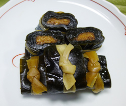

昆布巻き
- 調理時間：150 分
- （一人当たり）
- カロリー：329kcal
- たんぱく質：38.0g
- 脂質：6.8g
- 塩分：6.1g


＜作りやすい分量＞
- 昆布
- 10㎝×8枚
- 塩鮭
- 1切
- ホタテ
- 大6個
- かんぴょう
- 50㎝×2本
- 塩
- 少々
- 片栗粉
- 少々
- 昆布の戻し汁
- 300ｍｌ
- 料理酒
- 大さじ1
- しょうゆ
- 大さじ1
- みりん
- 大さじ1


- 昆布は水でサッと洗い、たっぷりの水に１時間程度浸す。かんぴょうもサッと洗い一緒に３０分程もどす。
※戻し加減の目安は、巻いたり、折ったりできる程度の弾力が残るくらい。
※昆布の戻し汁は捨てない。 - 鮭は昆布の幅に合わせて、半分に切り、骨と皮は除く。
- 昆布の水気を拭き、２枚重ねる。鮭をきっちり巻き、かんぴょうで結ぶ。
- 同様に片栗粉と塩を振ったホタテを3個ずつ並べて、ずれない様に昆布で巻き、かんぴょうで結ぶ。
- 鍋の内側を水で濡らし、③と④を入れ、煮汁の材料を注ぎ、落し蓋をして、弱火で１時間ほど煮る。
※１度に煮ないで、２日くらいに分けて２０分ずつ数回煮ると、より美味しくできる。
昆布巻き
１２月半ばは正月事始め。正月事始めとは、来る正月にむけて準備を始める日のことを指し、よく言われるのは社寺などで行われる煤払いです。おせちの準備もそろそろ考える時期になりますが、今月はおせち料理の定番、昆布巻きを紹介します。
昆布は、「よろこぶ」といった語呂合わせと共に「養老昆布（よろこぶ）」の意味を込め、不老長寿の意味があります。縁起ものの昆布をニシンで巻くのは、二親（ニシン）両親から子どもが生まれるよう願う子孫繁栄の意味があります。
また、昆布巻きは郷土色が強くでるおせち料理ですが、中に巻く具にもバリエーションがあり、鮭や穴子、牛肉などを巻いても楽しめます。「御節供」から名がついたお節は、節に神様に供える食べ物を大切な人々で分かち合うものです。賑やかにいただきましょう。